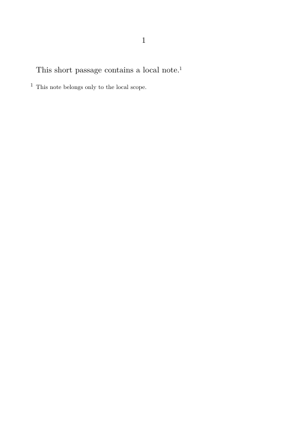
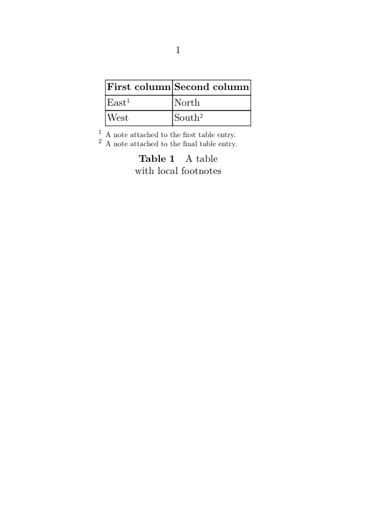
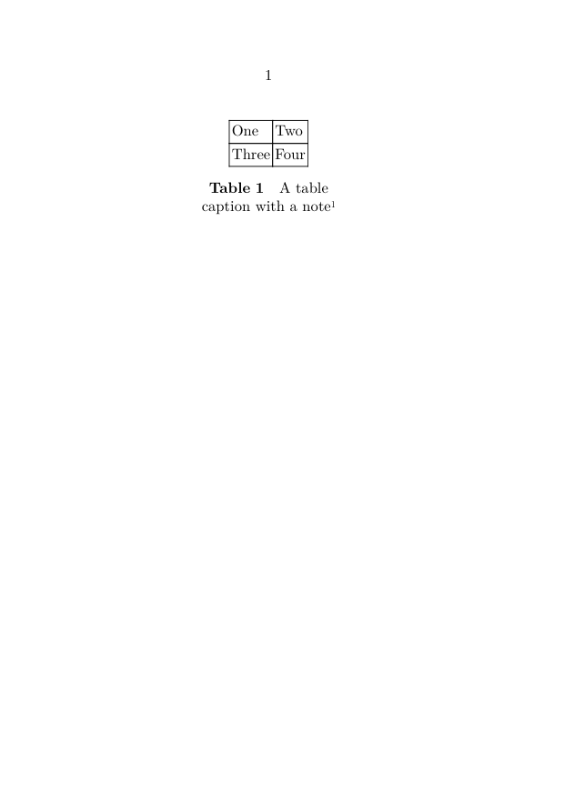
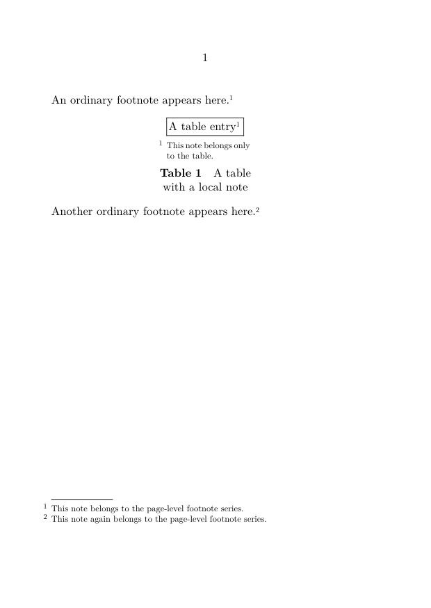
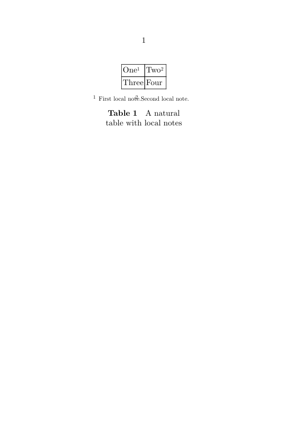
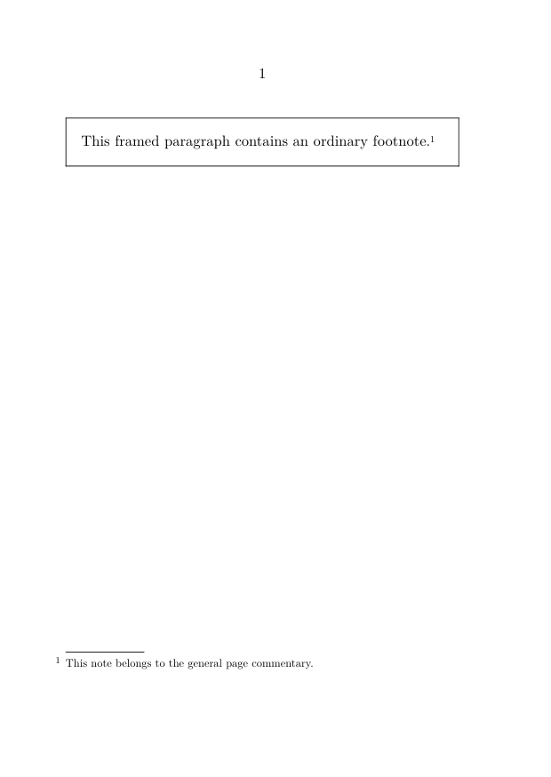
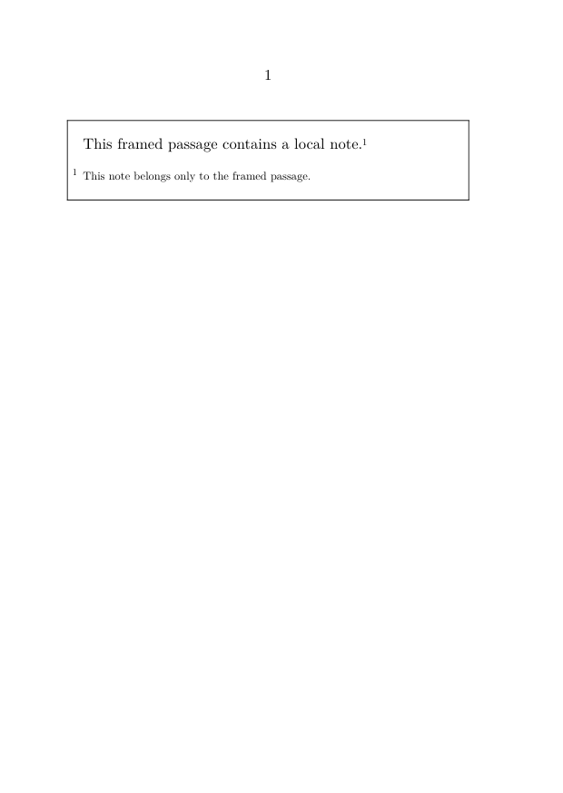
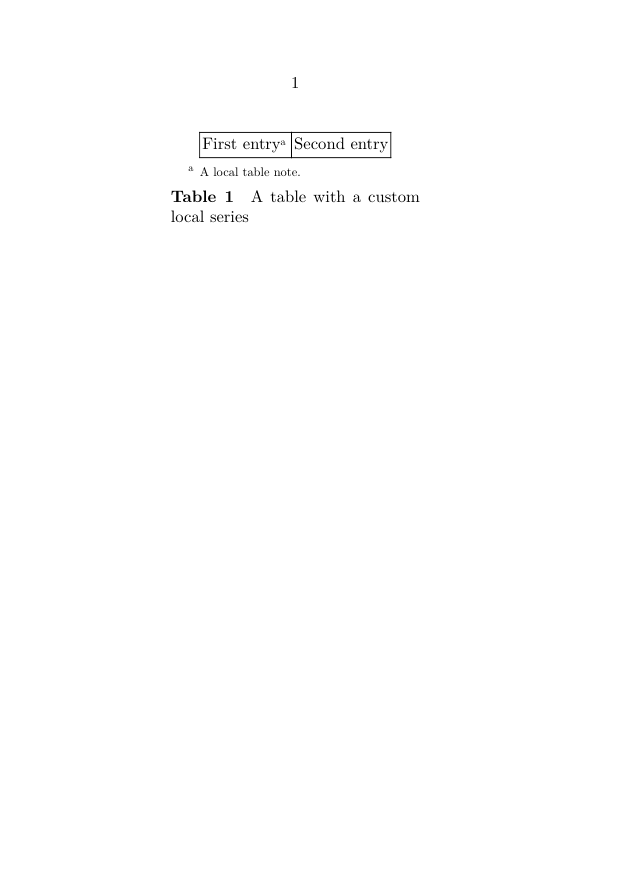
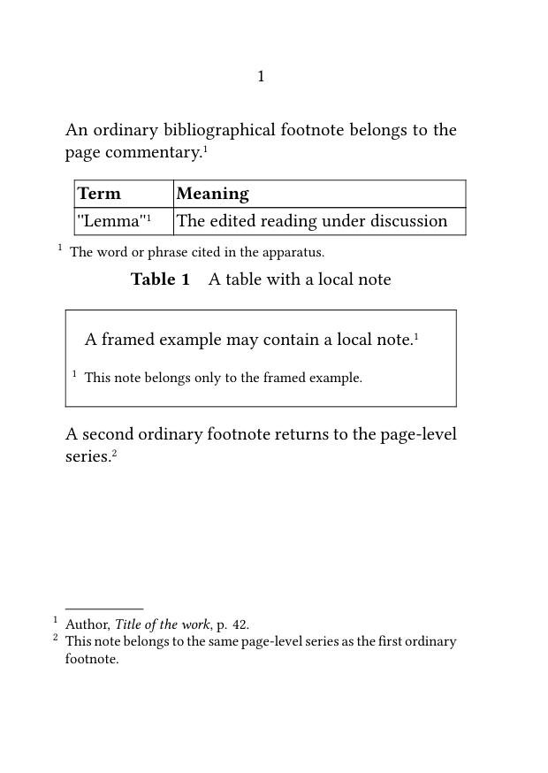

Footnotes in ConTeXt · Overview · Tutorial · How-to guides · Using local notes in tables, floats, and boxes · Reference · Explanation · Glossary
🚧 Under construction — This guide is currently being revised. Please do not modify its source code while this banner remains in place.
Local and object-specific notes · Previous: Placing numbered notes in the margin · How-to guides overview · Next: Producing annotated and unannotated versions
Contents
- 1 1. Goal
- 2 2. Understand local note scope
- 3 3. Create a local footnote context
- 4 4. Use local notes in a table
- 5 5. Keep local and ordinary footnotes independent
- 6 6. Control the width of a local note block
- 7 7. Use notes in framed texts
- 8 8. Distinguish migration from local placement
- 9 9. Use a custom note series locally
- 10 10. Compatibility with older ConTeXt versions
-
11
11. Common mistakes
- 11.1 11.1. Forgetting to place the local notes
- 11.2 11.2. Closing the local scope too early
- 11.3 11.3. Using ordinary footnotes when the notes must travel with an object
- 11.4 11.4. Assuming local notes join the main note sequence
- 11.5 11.5. Placing the local note block outside the object
- 11.6 11.6. Using a custom local series without defining it
- 12 12. Complete example
- 13 13. What this guide has established
- 14 14. Next steps
1. Goal
Keep note entries attached to the table, figure, caption, framed text, or other local structure to which they belong.
This is useful when:
- a note explains a table cell;
- a caption requires its own note;
- a figure contains local annotations;
- a framed example should carry its own notes;
- object-specific notes must remain separate from the ordinary page-level footnote sequence.
The basic structure is:
\startlocalfootnotes content containing footnotes \placelocalfootnotes \stoplocalfootnotes
Result
Footnotes created inside the local scope are collected separately and printed where \placelocalfootnotes occurs.
2. Understand local note scope
An ordinary footnote normally belongs to the page-level footnote series.
A table, figure, caption, or framed object may be boxed, moved, or composed independently from the surrounding text. An ordinary footnote created inside such a construction may therefore be migrated to the page footnote area rather than placed beside the object.
A local note context creates a temporary scope in which notes can be collected and placed separately.
Local means local in scope
A local note is not merely an ordinary footnote with a different visual style.
It belongs to a temporary note scope associated with a particular object or passage.
The local scope determines where the note is collected. Its precise editorial function still depends on the object and the way the note block is placed.
3. Create a local footnote context
The four main commands have complementary roles:
| Command | Function |
|---|---|
\startlocalfootnotes
|
Starts a local scope for the predefined footnote series.
|
\footnote
|
Creates a footnote inside that local scope. |
\placelocalfootnotes
|
Prints the footnotes collected in the local scope. |
\stoplocalfootnotes
|
Ends the local footnote scope. |
3.1. MWE: a minimal local note scope
-
\setuppapersize[A6] \starttext \startlocalfootnotes This short passage contains a local note.\footnote {This note belongs only to the local scope.} \blank[medium] \placelocalfootnotes \stoplocalfootnotes \stoptext
-

The note is collected within the local scope rather than with the ordinary page-level footnotes.
Place the notes before closing the scope
The command \placelocalfootnotes must occur before \stoplocalfootnotes.
4. Use local notes in a table
Local notes can be printed directly beneath the table to which they belong.
The following example uses \placelegend to combine:
- the table itself;
- the local note block placed beneath it.
4.1. MWE: local notes beneath a table
-
\setuppapersize[A6] \starttext \startlocalfootnotes \placetable [here] {A table with local footnotes} {\placelegend {\bTABLE \bTR \bTH First column \eTH \bTH Second column \eTH \eTR \bTR \bTD East\footnote {A note attached to the first table entry.} \eTD \bTD North \eTD \eTR \bTR \bTD West \eTD \bTD South\footnote {A note attached to the final table entry.} \eTD \eTR \eTABLE} {\placelocalfootnotes}} \stoplocalfootnotes \stoptext
-

The table and its local note block form one visual structure.
Why use \placelegend?
It provides one area for the table or figure and another area for material placed beneath it.
In this example, the second area contains the local note block.
This is one practical method of associating notes with a float. Other enclosing constructions may require a different arrangement.
4.2. Add a local note to a caption
The caption itself may contain a local note.
-
\setuppapersize[A6] \starttext \startlocalfootnotes \placetable [here] {A table caption with a note\footnote {This note belongs to the table caption.}} {\placelegend {\bTABLE \bTR \bTD One \eTD \bTD Two \eTD \eTR \bTR \bTD Three \eTD \bTD Four \eTD \eTR \eTABLE} {\placelocalfootnotes}} \stoplocalfootnotes \stoptext
-

The note is collected in the same local scope as the table and placed beneath the float.
5. Keep local and ordinary footnotes independent
Local footnotes can be used between ordinary page-level footnotes without joining their note block.
5.1. MWE: local notes between ordinary footnotes
-
\setuppapersize[A6] \starttext An ordinary footnote appears here.\footnote {This note belongs to the page-level footnote series.} \startlocalfootnotes \placetable [here] {A table with a local note} {\placelegend {\bTABLE \bTR \bTD A table entry\footnote {This note belongs only to the table.} \eTD \eTR \eTABLE} {\placelocalfootnotes}} \stoplocalfootnotes Another ordinary footnote appears here.\footnote {This note again belongs to the page-level footnote series.} \stoptext
-

Separate note scopes
The ordinary notes before and after the table belong to the page-level series.
The table note is collected and placed only within the local scope.
Compile the example when checking the exact numbering behaviour required by the document, especially when custom reset rules or several note series are also active.
6. Control the width of a local note block
A local note block placed beneath a table may need a controlled horizontal width.
One possible method is to place the local notes inside an invisible frame:
\defineframed [localnoteframe] [width=\hsize, frame=off, top=\hbox\bgroup, bottom=\egroup]
6.1. MWE: local notes in a width-controlled container
-
\setuppapersize[A6] \defineframed [localnoteframe] [width=\hsize, frame=off, top=\hbox\bgroup, bottom=\egroup] \starttext \startlocalfootnotes \placetable [here] {A natural table with local notes} {\placelegend {\bTABLE \bTR \bTD One\footnote{First local note.} \eTD \bTD Two\footnote{Second local note.} \eTD \eTR \bTR \bTD Three \eTD \bTD Four \eTD \eTR \eTABLE} {\localnoteframe{\placelocalfootnotes}}} \stoplocalfootnotes \stoptext
-

The frame is not printed. It provides a horizontal container for the local note block.
The top and bottom settings wrap the framed content in a horizontal box so that the note block is handled as one controlled unit.
Control width before adjusting typography
When the local note block does not align with the table, first inspect the width of its enclosing container.
Changing the font or spacing cannot correct an inappropriate container width.
Advanced construction
Test this framing method with the current ConTeXt version and with the actual table width used by the document.
7. Use notes in framed texts
A framed text may contain either:
- an ordinary footnote that belongs to the page commentary;
- a local footnote that must remain attached to the framed object.
These two requirements need different methods.
7.1. Allow an ordinary footnote to migrate
Depending on the enclosing construction, current LMTX may migrate an ordinary footnote from a box to the page-level footnote area.
-
\setuppapersize[A6] \starttext \startframedtext [width=\textwidth] This framed paragraph contains an ordinary footnote.\footnote {This note belongs to the general page commentary.} \stopframedtext \stoptext
-

This behaviour is appropriate when the note belongs to the document's general annotation rather than specifically to the framed passage.
Because migration depends on the enclosing construction, test the actual frame or box used by the document.
7.2. Keep notes inside the framed text
Use a local footnote scope when the note should remain visibly attached to the frame.
-
\setuppapersize[A6] \starttext \startlocalfootnotes \startframedtext [width=\textwidth] This framed passage contains a local note.\footnote {This note belongs only to the framed passage.} \blank[medium] \placelocalfootnotes \stopframedtext \stoplocalfootnotes \stoptext
-

This construction is useful for:
- examples;
- source extracts;
- side discussions;
- editorial boxes;
- independent text panels.
Choose according to editorial ownership
If the note belongs to the framed object, keep it local.
If it belongs to the general page commentary, use an ordinary footnote and test its migration from the chosen construction.
8. Distinguish migration from local placement
Migration and local placement solve different problems.
| Requirement | Recommended method |
|---|---|
| The note originates in a box but belongs to the general page commentary | Use an ordinary \footnote and test whether the enclosing construction migrates it correctly.
|
| The note must remain attached to a table, figure, or legend | Use \startlocalfootnotes and place the local note block beside or beneath the object.
|
| The note must appear inside a framed structure | Use a local footnote scope and call \placelocalfootnotes inside the frame.
|
| The note belongs to the document's main note sequence | Use the ordinary page-level footnote series.
|
Migration changes position; local scope changes collection
A migrated ordinary footnote still belongs to the page-level series.
A local footnote belongs to a separately collected local scope.
9. Use a custom note series locally
A custom note series can also be collected inside a local scope.
The generic structure is:
\startlocalnotes[series] content containing notes from that series \placelocalnotes[series] \stoplocalnotes
9.1. MWE: a custom local table-note series
-
\setuppapersize[A6] \definenote [TableNote] [footnote] \setupnotation [TableNote] [numberconversion=characters] \starttext \startlocalnotes[TableNote] \placetable [here] {A table with a custom local series} {\placelegend {\bTABLE \bTR \bTD First entry\TableNote {A local table note.} \eTD \bTD Second entry \eTD \eTR \eTABLE} {\placelocalnotes[TableNote]}} \stoplocalnotes \stoptext
-

This custom local scope separates the table-note series from:
- ordinary page-level footnotes;
- local notes belonging to other series.
Custom local series
Use a named series when the local notes have a distinct editorial function, numbering scheme, or typographical presentation.
Advanced syntax
Compile this example with the current ConTeXt version before using the generic local-note commands in a larger project.
For general information about custom series, see:
10. Compatibility with older ConTeXt versions
Some older ConTeXt setups required:
\automigrateinserts
to migrate footnotes from certain boxes into the page-level insertion area.
Current LMTX handles many such cases without this command.
Do not add legacy commands by default
Use \automigrateinserts only when a particular construction in an older ConTeXt setup demonstrably requires it.
11. Common mistakes
11.1. Forgetting to place the local notes
Starting a local scope is not enough.
Use:
\placelocalfootnotes
or the corresponding generic placement command before closing the scope.
11.2. Closing the local scope too early
This order is incorrect:
\startlocalfootnotes content with notes \stoplocalfootnotes \placelocalfootnotes
Place the notes before \stoplocalfootnotes.
11.3. Using ordinary footnotes when the notes must travel with an object
Ordinary footnotes may be migrated to the page note area.
Use a local note scope when the note block must remain attached to a table, float, or frame.
11.4. Assuming local notes join the main note sequence
Local notes are collected within their local scope rather than in the ordinary page-level note block.
Test the precise numbering when the document uses custom resets or several series.
11.5. Placing the local note block outside the object
When visual attachment is required, keep the placement command inside the table legend, frame, or other enclosing structure.
11.6. Using a custom local series without defining it
Define the series first:
\definenote [TableNote] [footnote]
Then use the corresponding local scope and placement commands.
Most frequent cause of misplaced notes
The note is created in one scope but placed in another.
Keep the local note scope, the object, and the placement command together.
12. Complete example
The following MWE combines:
- one ordinary page-level footnote;
- one table with a local note;
- one framed passage with a local note;
- a second ordinary page-level footnote;
- separate placement for each local note block.
12.1. MWE: page-level and object-specific notes
-
\setuppapersize[A6] \setupbodyfont [libertinus,10pt] \setupnote [footnote] [bodyfont=small] \starttext An ordinary bibliographical footnote belongs to the page commentary.\footnote {Author, \emph{Title of the work}, p. 42.} \startlocalfootnotes \placetable [here] {A table with a local note} {\placelegend {\bTABLE [option=stretch] \bTR \bTH Term \eTH \bTH Meaning \eTH \eTR \bTR \bTD ''Lemma''\footnote {The word or phrase cited in the apparatus.} \eTD \bTD The edited reading under discussion \eTD \eTR \eTABLE} {\placelocalfootnotes}} \stoplocalfootnotes \blank[medium] \startlocalfootnotes \startframedtext [width=\textwidth, title={Editorial example}] A framed example may contain a local note.\footnote {This note belongs only to the framed example.} \blank[small] \placelocalfootnotes \stopframedtext \stoplocalfootnotes A second ordinary footnote returns to the page-level series.\footnote {This note belongs to the same page-level series as the first ordinary footnote.} \stoptext
-

Compile the example and check that:
- the first ordinary note appears in the page-level footnote area;
- the table note appears directly beneath the table;
- the framed note appears inside the framed structure;
- each local note is printed inside its own scope;
- the final ordinary footnote belongs to the main page-level series.
13. What this guide has established
To use local notes in tables, floats, and boxes:
-
start a local scope with
\startlocalfootnotes; - create footnotes normally inside that scope;
-
place them with
\placelocalfootnotes; - keep the placement command inside the relevant object when visual attachment is required;
- use ordinary footnotes when notes belong to the general page commentary;
- distinguish migration of an ordinary footnote from collection in a local scope;
- use a custom local series when an object requires its own editorial category.
The central principle is that local notes belong to a local note scope associated with a particular object or passage, rather than to the page-level note sequence.
14. Next steps
14.1. Continue with the next guide
- Place numbered notes in the margin
- Define and manage multiple note series
- Create interactive footnotes
- Typeset notes in bidirectional documents
14.3. Consult the documentation
- Consult the note-command reference
- Understand the note mechanism
- Check the terminology used in the footnote documentation
Local and object-specific notes · Previous: Placing numbered notes in the margin · How-to guides overview · Next: Producing annotated and unannotated versions
Footnotes in ConTeXt · Overview · Tutorial · How-to guides · Using local notes in tables, floats, and boxes · Reference · Explanation · Glossary